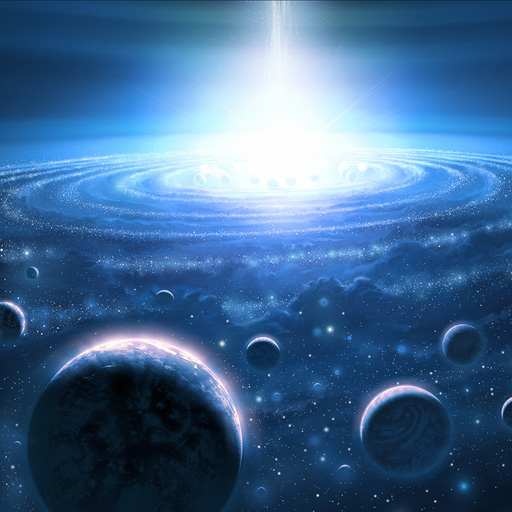

O omniverso
O Omniverso Consiste em relatar 3 universos criados por nós mesmos (como um exemplo de jogatina de RPG baseado em DnD)
O Surgimento dos Mundos em Caeror
Ninguém sabe exatamente como o universo começou. Alguns teorizam que uma explosão cósmica catastrófica espalhou os mundos na imensidão da Grande Escuridão – mundos que um dia teriam formas de vida maravilhosas e esbeltas. Outros acreditam que o universo foi criado por uma única entidade poderosa. Embora as origens exatas do universo caótico permaneçam incertas, está claro que uma raça de seres poderosos surgiu para trazer estabilidade a esses vários mundos e assegurar um futuro seguro para os seres que seguissem seus passos. Chamados de Nagans, deuses colossais que tinham a pele metálica, dos cantos distantes do cosmo, exploraram o universo recém nascido e se fixaram nos planos encontrados para trabalhar nele. Eles moldaram os mundos elevando imponentes montanhas e cavando vastos oceanos. Talharam céus e criaram atmosferas. Tudo partindo de um plano, criar ordem a partir do caos. Eles deram poder a raças primitivas para cuidar e manter e guardara integridade dos seus respectivos planos.Comandado pela elite conhecida como o Panteão de Deuses, os Nagans trouxeram ordem a duzentos milhões de mundos espalhados ao longo da Grande Escuridão do Além durante os primeiros anos de criação. O benevolente Panteão de Deuses que buscava proteger estes mundos estruturados, sempre estavam vigilantes contra a ameaça de ataque das entidades extra-dimensionais vis da Hoalral (Plano Espiral Etéreo). O Caos Inferior, uma dimensão etérea de magias caóticas que conectada inúmeros mundos do universo, era lar de um número infinito de seres malignos que só buscavam destruir a vida e devorar as energias vivas do universo. Incapazes de conceber o mal em qualquer forma, os Nagans tentaram achar um modo de terminar com a constante ameaça dos demônios Caeror (mundo)
O mundo de Caeror é a terra natal de várias raças, as mais notáveis sendo os elfos (Drows, elfos Nobres, elfos de Sangue e outros), humanos, anões, taurinos, trolls, gnomos e dragões. Durante sua criação, Caeror foi abençoada pelos Nagans. Um dia, os exércitos diabólicos da Legião de fogo veio e exterminou a paz e levou os Drows a dividirem seu mundo. Gradativamente, raças foram sendo arrastadas para Caeror ( como por exemplo os orcs, ogros, Tieflings etc) outras evoluíram, e outras foram criadas a partir do pó. Os povos de Caeror têm lutado brutalmente contra os demônios e seus servos, e muito sangue foi e continua a ser derramado.